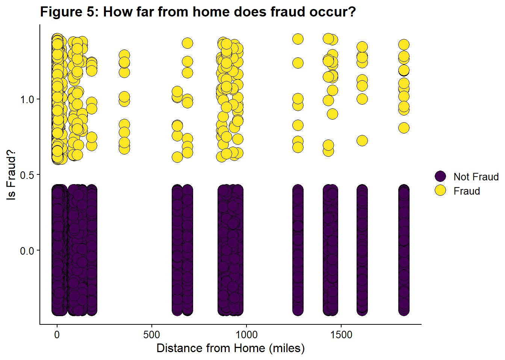

# Code Block 2: Loading Libraries
# loading tidyverse/ tidymodels packages
library(tidyverse) #core tidyverse
library(tidymodels) # tidymodels framework
library(lubridate) # date/time handling
# visualization
library(viridis) #color scheme that is colorblind friendly
library(ggthemes) # themes for ggplot
library(gt) # to make nice tables
library(cowplot) # to make multi-panel figures
library(corrplot) # nice correlation plot
#Data Cleaning
library(skimr) #provides overview of data and missingness
#Geospatial Data
library(tidygeocoder) #converts city/state to lat/long
#Modeling
library(ranger) # random forest
library(glmnet) # elastic net logistic regression
library(themis) # provides up/down-sampling methods for the data
library(lightgbm) # fast gradient-boosted machine algo
library(bonsai) #provides parnsip objects for tree-based modelsCredit Card Fraud: A Tidymodels Tutorial
R
R-code
tidymodels
Machine Learning
classifiers
An Imbalanced Class Problem
1. Classification using tidymodels
I will walk through a classification problem from importing the data, cleaning, exploring, fitting, choosing a model, and finalizing the model.
I wanted to create a project that could serve as a template for other two-class classification problems. I also wanted to fully use the tidymodels framework, particularly more advanced functionalities like workflowsets. There are some great tutorials on tidymodels, in particular Olivier Gimenez’s tutorial on Kaggle’s Titanic competition. This tutorial steps through each model individually, while I wanted to use the more streamlined approach offered by workflowsets. I also found myself confused as I started doing more advanced procedures in tidymodels, despite having read the book Tidy Modeling with R multiple times and working through several tutorials on Julia Silge’s excellent blog. I ended up writing my own tutorial on tidymodels objects that goes through the differences in the various ways to perform fitting and the various objects produced.
In addition to providing a template for the machine learning portion, I wanted to create nice figures and tables that could also be re-used.
I will also have a different version of this code on Datacamp. I’ve numbered the code chunks manually to aid in comparison between the two versions. I start numbering at 2, because Code Block 1 will be installing libraries at the Datacamp workspace. There are some important differences between the RStudio environment and online notebooks/workspaces.
Please feel free to copy and use any of my code in your work. I’d appreciate an acknowledgment or link back if you find this tutorial useful.
2. The problem: predicting credit card fraud
The goal of the project is to correctly predict fraudulent credit card transactions.
The specific problem is one provided by Datacamp as a challenge in the certification community. The dataset (Credit Card Fraud) can also be found at the Datacamp workspace. To access the dataset and the data dictionary, you can create a new notebook on datacamp using the Credit Card Fraud dataset. That will produce a notebook like this with the dataset and the data dictionary.
The original source of the data (prior to preparation by DataCamp) can be found here.
3. Set-up steps
Loading the necessary libraries.
I’m setting a global theme for my figures. I’m using cowplot to create some composite figures, and apparently you must choose a cowplot theme if you set a global theme. You can use a ggtheme on a graph by graph basis, but not globally.
# Code Block 3: setting global figure options
theme_set(theme_cowplot(12))Loading the data. This is a local copy that is part of the workspace download from Datacamp.
# Code Block 4: Reading in the data
fraud <- read_csv('datacamp_workspace/credit_card_fraud.csv', show_col_types = FALSE)
fraud# A tibble: 339,607 × 15
trans_date_trans_time merchant category amt city state lat long
<dttm> <chr> <chr> <dbl> <chr> <chr> <dbl> <dbl>
1 2019-01-01 00:00:44 Heller, Gutman… grocery… 107. Orie… WA 48.9 -118.
2 2019-01-01 00:00:51 Lind-Buckridge enterta… 220. Mala… ID 42.2 -112.
3 2019-01-01 00:07:27 Kiehn Inc grocery… 96.3 Gren… CA 41.6 -123.
4 2019-01-01 00:09:03 Beier-Hyatt shoppin… 7.77 High… NM 32.9 -106.
5 2019-01-01 00:21:32 Bruen-Yost misc_pos 6.85 Free… WY 43.0 -111.
6 2019-01-01 00:22:06 Kunze Inc grocery… 90.2 Hono… HI 20.1 -155.
7 2019-01-01 00:22:18 Nitzsche, Kess… shoppin… 4.02 Vale… NE 42.8 -101.
8 2019-01-01 00:22:36 Kihn, Abernath… shoppin… 3.66 West… OR 43.8 -122.
9 2019-01-01 00:31:51 Ledner-Pfanner… gas_tra… 102. Thom… UT 39.0 -110.
10 2019-01-01 00:34:10 Stracke-Lemke grocery… 83.1 Conw… WA 48.3 -122.
# ℹ 339,597 more rows
# ℹ 7 more variables: city_pop <dbl>, job <chr>, dob <date>, trans_num <chr>,
# merch_lat <dbl>, merch_long <dbl>, is_fraud <dbl>4. Validation of data types
I examine the dataset via skim and make sure all data elements are as expected. skim is a function in the skimr package that provides a high-level summary of the data. The output is a dataframe, so it can be manipulated and formatted more nicely than the output of summary().
# Code Block 5: Validation of Data Types Against Data Dictionary
# custom skim function to remore some of the quartile data
my_skim <- skim_with(numeric = sfl(p25 = NULL, p50 = NULL, p75 = NULL))
my_skim(fraud)| Name | fraud |
| Number of rows | 339607 |
| Number of columns | 15 |
| _______________________ | |
| Column type frequency: | |
| character | 6 |
| Date | 1 |
| numeric | 7 |
| POSIXct | 1 |
| ________________________ | |
| Group variables | None |
Variable type: character
| skim_variable | n_missing | complete_rate | min | max | empty | n_unique | whitespace |
|---|---|---|---|---|---|---|---|
| merchant | 0 | 1 | 7 | 37 | 0 | 693 | 0 |
| category | 0 | 1 | 4 | 14 | 0 | 14 | 0 |
| city | 0 | 1 | 4 | 25 | 0 | 176 | 0 |
| state | 0 | 1 | 2 | 2 | 0 | 13 | 0 |
| job | 0 | 1 | 6 | 49 | 0 | 163 | 0 |
| trans_num | 0 | 1 | 32 | 32 | 0 | 339607 | 0 |
Variable type: Date
| skim_variable | n_missing | complete_rate | min | max | median | n_unique |
|---|---|---|---|---|---|---|
| dob | 0 | 1 | 1927-09-09 | 2001-07-26 | 1974-03-10 | 187 |
Variable type: numeric
| skim_variable | n_missing | complete_rate | mean | sd | p0 | p100 | hist |
|---|---|---|---|---|---|---|---|
| amt | 0 | 1 | 70.58 | 161.68 | 1.00 | 28948.90 | ▇▁▁▁▁ |
| lat | 0 | 1 | 39.72 | 5.09 | 20.03 | 66.69 | ▁▆▇▁▁ |
| long | 0 | 1 | -110.62 | 12.65 | -165.67 | -89.63 | ▁▁▅▇▆ |
| city_pop | 0 | 1 | 107140.87 | 293029.89 | 46.00 | 2383912.00 | ▇▁▁▁▁ |
| merch_lat | 0 | 1 | 39.72 | 5.13 | 19.03 | 67.51 | ▁▅▇▁▁ |
| merch_long | 0 | 1 | -110.62 | 12.66 | -166.67 | -88.63 | ▁▁▃▇▅ |
| is_fraud | 0 | 1 | 0.01 | 0.07 | 0.00 | 1.00 | ▇▁▁▁▁ |
Variable type: POSIXct
| skim_variable | n_missing | complete_rate | min | max | median | n_unique |
|---|---|---|---|---|---|---|
| trans_date_trans_time | 0 | 1 | 2019-01-01 00:00:44 | 2020-12-31 23:59:24 | 2019-12-31 15:11:23 | 338504 |
Everything looks okay, and I am lucky because there is no missing data. I will not need to do cleaning or imputation.
I see that is_fraud is coded as 0 or 1, and the mean of this variable is 0.00525. The number of fraudulent transactions is very low, and we should use treatments for imbalanced classes when we get to the fitting/ modeling stage.
5. Do all variables have sensible types?
I will look at each variable and decide whether to keep, transform, or drop it. This is a mixture of Exploratory Data Analysis and Feature Engineering, but I find it helpful to do some simple feature engineering as I start exploring the data. In this project, we have all data to begin with, so any transformations will be performed on the entire dataset. If we had a separate test dataset, we’d need to do the transformation on that in parallel or, more ideally, do the transformations as a recipe_step() in the tidymodels framework. Then the transformations would be applied to any data the recipe was used on as part of the modeling workflow. There is less chance of data leakage or missing a step when you perform the feature engineering in the recipe.
Questions to consider:
- Should strings be converted to factors?
- Is date-time data properly encoded?
- Is financial data encoded numerically?
- Is geographic data consistently rendered? (city/ state strings vs. lat/long numeric pairs)
First, I grouped all my variables by type and examined each variable class by class. The dataset has the following types of variables:
- Strings
- Geospatial Data
- Dates
- Date/Times
- Numerical
As I go through the different classes of variables, I will provide information from the data dictionary about them.
5.1. Looking at the strings
Strings are usually not a useful format for classification problems. The strings should be converted to factors, dropped, or otherwise transformed.
5.1.1. Strings to Factors (Code Block 6 - 8)
category, Category of Merchantjob, Job of Credit Card Holder
5.1.2. Strings as Strings (Code Block 9)
merchant, Merchant Nametrans_num, Transaction Number
I’m not going to retain these, as they are either unlikely to have predictive power (trans_num) or are highly correlated with other predictors (merchant with merch_lat/merch_long.)
5.2. Strings to Geospatial Data (Code Block 13)
We have plenty of geospatial data as lat/long pairs, so I want to convert city/state to lat/long so I can compare to the other geospatial variables. This will also make it easier to compute new variables like the distance the transaction is from the home location. I will transform and explore this when I handle the other geospatial data.
city, City of Credit Card Holderstate, State of Credit Card Holder
Things to consider as we walk through the data:
- Do we have typos that lead to duplicate entries : VA/ Va. / Virginia?
- Do we have excessive # of categories? Do we want to combine some?
- Should they be ordered?
5.1.1. Exploring the factors: how is the compactness of categories?
The predictors category and job are transformed into factors.
# Code Block 6: Converting Strings to Factors
fraud$category <- factor(fraud$category)
fraud$job <- factor(fraud$job)From the skim output, I see that category has 14 unique values, and job has 163 unique values. The dataset is quite large, with 339,607 records, so these variables don’t have an excessive number of levels at first glance. However, it is worth seeing if I can compact the levels to a smaller number.
Why do we care about the number of categories and whether they are “excessive”?
Consider the extreme case where a dataset had categories that only contained one record each. There is simply insufficient data to make correct predictions using category as a predictor on new data with that category label. Additionally, if your modeling uses dummy variables, having an extremely large number of categories will lead to the production of a huge number of predictors, which can slow down the fitting. This is fine if all the predictors are useful, but if they aren’t useful (as in the case of having only one record for a category), trimming them will improve the speed and quality of the data fitting.
If I had subject matter expertise, I could manually combine categories. For example, in this dataset, the three largest categories in job are surveying-related and perhaps could be combined. If you don’t have subject matter expertise, or if performing this task would be too labor intensive, then you can use cutoffs based on the amount of data in a category. If the majority of the data exists in only a few categories, then it might be reasonable to keep those categories and lump everything else in an “other” category or perhaps even drop the data points in smaller categories. As a side note, the forcats package has a variety of tools to handle consolidating and dropping levels based on different cutoffs if this is the approach you decide to take.
One way to evaluate the compactness of a factor is to group the data by category and look at a table of counts. I like the gt package for making attractive tables in R. (Uncomment the line in Code Block 7 #gt:::as.tags.gt_tbl(table_3a) to see the table.) The tabular data also shows that there aren’t typos leading to duplicate categories.
Another way to evaluate the compactness is to make a cumulative plot. This looks at the proportion of data that is described as you add categories. I’m using the cowplot package to make multipanel figures. I want to look at both factors at once; this is fine for exploratory data analysis, but I wouldn’t recommend it for a report or presentation, since there is no connection between the two variables.
# Code Block 7: Exploring the Compactness of the Categories
# Exploring the jobs factor
# bin and count the data and return sorted
table_3a_data <- fraud %>% count(job, sort = TRUE)
# creating a table to go with this, but not displaying it
table_3a <- table_3a_data %>%
gt() %>%
tab_header(title = "Jobs of Card Holders") %>%
cols_label(job = "Jobs", n = "Count") %>%
opt_stylize(style = 1,
color = "green",
add_row_striping = TRUE)
#gt:::as.tags.gt_tbl(table_3a) #displays the table
fig_1a <- ggplot(table_3a_data, aes(
x = 1:nlevels(fraud$job),
y = (cumsum(n) * 100 / nrow(fraud))
)) +
geom_point(color = "darkcyan") +
geom_hline(yintercept = 80) + #marker for 80% of the data
xlab("jobs index") +
ylab("% of Total") +
ylim(0, 100) # +
#ggtitle("Jobs of Card Holder") #use if standalone graph
# same as above, but just for the category variable
table_3b_data <- fraud %>% count(category, sort = TRUE)
table_3b <- table_3b_data %>%
gt() %>%
tab_header(title = "Transaction Category in Credit Card Fraud") %>%
cols_label(category = "Category", n = "Count") %>%
opt_stylize(style = 1,
color = "blue",
add_row_striping = TRUE) #%>%
#gt:::as.tags.gt_tbl(table_3b)
fig_1b <- ggplot(table_3b_data, aes(
x = 1:nlevels(fraud$category),
y = (cumsum(n) * 100 / nrow(fraud))
)) +
geom_point(color = "darkcyan") +
geom_hline(yintercept = 80) +
xlab("category index") +
ylab("% of Total") +
ylim(0, 100) #+
#ggtitle("Jobs of Card Holder") #use if standalone graph
#this makes the panel grid and labels it
plot_fig_1 <-
plot_grid(fig_1a,
fig_1b,
labels = c('A', 'B'),
label_size = 14)
#This creates the figure title
title_1 <- ggdraw() +
draw_label(
"Figure 1: Exploring Categorical Variables",
fontface = 'bold',
x = 0,
hjust = 0,
size = 14
) +
theme(# add margin on the left of the drawing canvas,
# so title is aligned with left edge of first plot
plot.margin = margin(0, 0, 0, 7))
#this combines the panel grid, title, and displays both
plot_grid(title_1,
plot_fig_1,
ncol = 1,
# rel_heights values control vertical title margins
rel_heights = c(0.1, 1))If you look at Figure 1A, roughly 75-80 categories have to be included to capture 80% of the data. For Figure 1B, roughly ten categories have to be included. Ideally, you’d like a very steep curve initially (where a “small number” of categories cover the “majority” of the data) and then a long, shallow tail approaching 100% that corresponds to the data to be binned in “other” or dropped. There aren’t hard and fast rules on making these decisions. I decided to use 80% as my threshold. Both of these curves look relatively shallow to me, so I decided not to do any binning, grouping, or dropping of levels.
I decided to look at all the categories of transactions just to see which ones were the most common.
# Code Block 8: Exploring the Category factor
ggplot(fraud, aes(fct_infreq(category))) +
geom_bar(color = "darkcyan", fill = "darkcyan") +
ggtitle("Figure 2: Types of Transactions") +
coord_flip() +
ylab("Count") +
xlab("Merchant Type")Gas/transport was the most common category, and grocery was the second most common, both of which make sense. The least common category was travel. Nothing seemed unusual in the ranking.
5.1.2. Looking at our character strings
Merchant name (merchant) and transaction number(trans_num) are both strings. Transaction number should not influence fraud rate as it is a number assigned to the transaction when processed. I will drop it from our dataset. Merchant name could be correlated with fraud, for example, if a company’s employee was involved. However, this data is also represented by the location and category. If a location/category is found to have higher levels of fraud, then a more detailed examination of those transactions can be performed, including the merchant name. Here, I also remove it from the dataset.
# Code Block 9: Removing Character/ String Variables
fraud <- fraud %>%
select(-merchant,-trans_num)5.2. Looking at the geographic data
This data is coded as numeric (latitude and longitude) or character (city/state), but we can recognize it as geographic data and treat it appropriately.
First, there are two sets of geographic data related to the merchant. The location of the merchant and where the transaction occurred. I create scatter plots of latitude and longitude separately, because I want to check the correlation between the two sources of data (merchant and transaction). I create a shared legend following the article here.
# Code Block 10: Comparing Merchant and Transaction Locations
# calculate correlations
cor_lat <- round(cor(fraud$lat, fraud$merch_lat), 3)
cor_long <- round(cor(fraud$long, fraud$merch_long), 3)
# make figure
fig_3a <-
ggplot(fraud, aes(lat, merch_lat, fill = factor(is_fraud))) +
geom_point(
alpha = 1,
shape = 21,
colour = "black",
size = 5
) +
ggtitle("Latitude") +
ylab("Merchant Latitude") +
xlab("Transaction Latitude") +
scale_fill_viridis(
discrete = TRUE,
labels = c('Not Fraud', 'Fraud'),
name = ""
) +
geom_abline(slope = 1, intercept = 0)
fig_3b <-
ggplot(fraud, aes(long, merch_long, fill = factor(is_fraud))) +
geom_point(
alpha = 1,
shape = 21,
colour = "black",
size = 5
) +
ggtitle("Longitude") +
ylab("Merchant Longitude") +
xlab("Transaction Longitude") +
scale_fill_viridis(
discrete = TRUE,
labels = c('Not Fraud', 'Fraud'),
name = ""
) +
geom_abline(slope = 1, intercept = 0)
# create the plot with the two figs on a grid, no legend
prow_fig_3 <- plot_grid(
fig_3a + theme(legend.position = "none"),
fig_3b + theme(legend.position = "none"),
align = 'vh',
labels = c("A", "B"),
label_size = 12,
hjust = -1,
nrow = 1
)
# extract the legend from one of the figures
legend <- get_legend(
fig_3a +
guides(color = guide_legend(nrow = 1)) +
theme(legend.position = "bottom")
)
# add the legend to the row of figures, prow_fig_3
plot_fig_3 <- plot_grid(prow_fig_3, legend, ncol = 1, rel_heights = c(1, .1))
# title
title_3 <- ggdraw() +
draw_label(
"Figure 3. Are Merchant and Transaction Coordinates Correlated?",
fontface = 'bold',
size = 14,
x = 0,
hjust = 0
) +
theme(plot.margin = margin(0, 0, 0, 7))
# graph everything
plot_grid(title_3,
plot_fig_3,
ncol = 1,
rel_heights = c(0.1, 1))These two sets of data are highly correlated (for latitude = 0.994 and for longitude = 0.999) and thus are redundant. So I remove merch_lat and merch_long from the dataset.
# Code Block 11: Removing merch_lat and merch_long
fraud <- fraud %>%
select(-merch_lat,-merch_long) %>%
rename(lat_trans = lat, long_trans = long)Next, I will look and see if some locations are more prone to fraud.
# Code Block 12: Looking at Fraud by Location
ggplot(fraud, aes(long_trans, lat_trans, fill = factor(is_fraud))) +
geom_point(
alpha = 1,
shape = 21,
colour = "black",
size = 5,
position = "jitter"
) +
scale_fill_viridis(
discrete = TRUE,
labels = c('Not Fraud', 'Fraud'),
name = ""
) +
ggtitle("Figure 4: Where does fraud occur? ") +
ylab("Latitude") +
xlab("Longitude") It looks like there are some locations which only have fraudulent transactions.
Next, I’m going to convert city/state into latitude and longitude using the tidygeocoder package. Also included code to save this output and then re-import it. You likely do not want to be pulling the data from the internet every time you run the code, so this gives you the option to work from a local copy. For many services, it is against terms of service to repeatedly make the same calls rather than working from a local version. I did find that I could originally pull all data from ‘osm’, but while double checking this code, I found that the service is now imposing some rate limit and denies some requests, leading to some NA entries. So do check your results.
# Code Block 13: Converting city/state data lat/long
# need to pass an address to geo to convert to lat/long
fraud <- fraud %>%
mutate(address = str_c(city, state, sep = " , "))
# generate a list of distinct addresses to look up
# the dataset is large, so it is better to only look up unique address rather that the address
# for every record
address_list <- fraud %>%
distinct(address)
# this has one more than number in the cities, so there must be a city with the same name in more than one state.
#I don't want to run this api call everytime I open the notebook, so I downloaded the data and will reimport it and load it
# Below is the code to run the call. Uncomment it.
# gets coordinates for city,states
#home_coords <-
# geo(address_list$address,
# method = "osm",
# full_results = FALSE)
#write.csv("home_coords.csv", home_coords)
#home_coords <- home_coords %>%
# rename(lat_home = lat, long_home = long)
# I downloaded it using the gui interface provided by datacamp when you view the object. This adds an extra set of "" compared to write.csv.
# Reimport the data and load it
home_coords <-
read_csv('datacamp_workspace/downloaded_coords.csv', show_col_types = FALSE)
# imported home coords has an extra set of quotation marks
home_coords <- home_coords %>%
mutate(address = str_replace_all(address, "\"", "")) %>%
rename(lat_home = lat, long_home = long)
# use a left join on fraud and home_coords to assign the coord to every address in fraud
fraud <- fraud %>%
left_join(home_coords, by = "address")Now I’m going to calculate the distance between the card holder’s home and the location of the transaction. I think distance might be a feature that is related to fraud. I followed the tutorial here for calculating distance
# Code Block 14: Distance Between Home and Transaction
# I believe this assuming a spherical Earth
# convert to radians
fraud <- fraud %>%
mutate(
lat1_radians = lat_home / 57.29577951,
lat2_radians = lat_trans / 57.29577951,
long1_radians = long_home / 57.29577951,
long2_radians = long_trans / 57.29577951
)
# calculating distance
fraud <-
fraud %>% mutate(distance_miles = 3963.0 * acos((sin(lat1_radians) * sin(lat2_radians)) + cos(lat1_radians) * cos(lat2_radians) * cos(long2_radians - long1_radians)
))
# calculating the correlation
fraud_distance <- round(cor(fraud$distance_miles, fraud$is_fraud), 3) Despite my assumption that distance would be correlated with fraud, the correlation value is quite low, -0.003.
I’m going to visualize it anyway.
# Code Block 15: Distance from Home and Fraud
ggplot(fraud, aes(distance_miles, is_fraud , fill = factor(is_fraud))) +
geom_point(
alpha = 1,
shape = 21,
colour = "black",
size = 5,
position = "jitter"
) +
scale_fill_viridis(
discrete = TRUE,
labels = c('Not Fraud', 'Fraud'),
name = ""
) +
ggtitle("Figure 5: How far from home does fraud occur?") +
xlab("Distance from Home (miles)") +
ylab("Is Fraud?") 
Some distances only have fraudulent transactions. This might be related to the locations that are only fraud, Figure 4.
This new feature distances_miles is retained, and the original variables (city, state) and the intermediate variables (address, variables used to calculate distance) are removed in Code Block 16.
# Code Block 16: Remove Extraneous/Temp Variables
# created to calculate distance
fraud <- fraud %>%
select(-lat1_radians,-lat2_radians,-long1_radians,-long2_radians)
#remove city and state and address, replaced by lat/long
fraud <- fraud %>%
select(-city, -state, -address)5.3. Looking at the dates
Date
dob, Date of Birth of Credit Card Holder
Questions:
What is the date range, and does it make sense?
Do we have improbably old or young people?
Do we have historic or futuristic transaction dates?
I calculate the age from the dob and visualize them both.
# Code Block 17: Looking at dob
#summary(fraud$dob) #if you wanted a printed summary stats
fig_6a <- ggplot(fraud, aes(dob)) +
geom_histogram(color = "darkcyan",
fill = "darkcyan" ,
bins = 10) +
#ggtitle("How old are card Holders?") +
ylab("Count") +
xlab("Date of Birth")
fraud <- fraud %>%
#mutate (age = trunc((dob %--% today()) / years(1))) #if you wanted to calculate age relative to today
mutate(age = trunc((
dob %--% min(fraud$trans_date_trans_time)
) / years(1)))
#summary(fraud$age) #if you wanted a printed summary stats
fig_6b <- ggplot(fraud, aes(age)) +
geom_histogram(color = "darkcyan",
fill = "darkcyan",
bins = 10) +
#ggtitle("How old are card holders?") +
ylab("Count") +
xlab("Age")
plot_fig_6 <- plot_grid(fig_6a, fig_6b, labels = c('A', 'B'))
title_6 <- ggdraw() +
draw_label(
"Figure 6. How old are the card holders?",
fontface = 'bold',
x = 0,
hjust = 0
) +
theme(# add margin on the left of the drawing canvas,
# so title is aligned with left edge of first plot
plot.margin = margin(0, 0, 0, 7))
plot_grid(title_6,
plot_fig_6,
ncol = 1,
# rel_heights values control vertical title margins
rel_heights = c(0.1, 1))table_4_data <- fraud %>% count(age)
table_4 <- table_4_data %>%
gt() %>%
tab_header(title = "Ages of Card Holders") %>%
cols_label(age = "Ages", n = "Count") %>%
opt_stylize(style = 1,
color = "green",
add_row_striping = TRUE)
gt:::as.tags.gt_tbl(table_4)| Ages of Card Holders | |
| Ages | Count |
|---|---|
| 17 | 2190 |
| 18 | 2198 |
| 19 | 6592 |
| 20 | 741 |
| 21 | 2207 |
| 22 | 31 |
| 23 | 3663 |
| 25 | 3659 |
| 26 | 6587 |
| 27 | 4378 |
| 28 | 2926 |
| 29 | 8772 |
| 30 | 17525 |
| 31 | 16093 |
| 32 | 2940 |
| 33 | 10220 |
| 34 | 11675 |
| 35 | 2204 |
| 36 | 10218 |
| 37 | 9489 |
| 38 | 8049 |
| 39 | 5120 |
| 40 | 8017 |
| 41 | 1467 |
| 42 | 6592 |
| 43 | 5847 |
| 44 | 14619 |
| 45 | 14608 |
| 46 | 13888 |
| 47 | 8015 |
| 48 | 1500 |
| 49 | 5135 |
| 50 | 1482 |
| 51 | 12449 |
| 52 | 7330 |
| 53 | 5855 |
| 54 | 2922 |
| 55 | 3684 |
| 56 | 735 |
| 57 | 7340 |
| 58 | 2201 |
| 59 | 7318 |
| 60 | 2194 |
| 61 | 2951 |
| 62 | 5878 |
| 63 | 5143 |
| 64 | 5115 |
| 65 | 3657 |
| 66 | 737 |
| 67 | 4391 |
| 68 | 6582 |
| 70 | 1461 |
| 72 | 8 |
| 73 | 2939 |
| 75 | 1463 |
| 76 | 1472 |
| 77 | 753 |
| 78 | 2951 |
| 79 | 5118 |
| 80 | 11 |
| 81 | 1465 |
| 82 | 2926 |
| 83 | 4393 |
| 86 | 744 |
| 89 | 2929 |
| 90 | 3652 |
| 91 | 2193 |
The ages seem reasonable (calculated relative to the earliest date of transactions). There are a few thousand 17-year-olds, which is too young to have their own credit card, but it is plausible that they would be an authorized user on their parents’ card. age seems a more reasonable variable than dob, so dob is also dropped from the dataset. For example, scammers might be more likely to target 90-year-olds. The age is the feature that leads to them being targeted, not the birth year. The birth year is related to age through the current date- in 10 years, a new cohort of birth years would be targeted if age is the important feature. So the age feature is more robust to passing time than dob.
# Code Block 18: Removing dob
fraud <- fraud %>%
select(-dob)5.4. Looking at the date-times
date-time
trans_date_trans_time, Transaction DateTime
Questions
Would processing the date-times yield more useful predictors?
First, I want to look at variation in the number of transactions with date-time. I chose to use a histogram with bins corresponding to one month widths.
# Code Block 19: Looking at Transaction Date/ Times
ggplot(fraud, aes(trans_date_trans_time)) +
geom_histogram(color = "darkcyan",
fill = "darkcyan",
bins = 24) + #24 months in dataset
ggtitle("Figure 7: When do Transactions occur") +
ylab("Count") +
xlab("Date/ Time")
Next, I will break the transaction date-time into day of the week, hour, and the date only. I’m doing this here with lubridate functions, but I could also do this in the model building section, when I create recipes by using step_date(). I will also graph transactions by day of the week.
# Code Block 20:
fraud <- fraud %>%
mutate(
date_only = date(trans_date_trans_time),
hour = hour(trans_date_trans_time),
weekday = wday(trans_date_trans_time)
)
ggplot(fraud, aes(weekday)) +
geom_histogram(
color = "darkcyan",
fill = "darkcyan",
binwidth = 1,
center = 0.5
) +
ggtitle("Figure 7: On what days do transactions occur?") +
ylab("Count") +
xlab("Weekday")Monday has the highest number of transactions; this could be due to businesses processing orders that came in over the weekend. By default, lubridate codes the day of the week as a number where 1 means Monday, 7 means Sunday.
Now, I look at what time of day do most transactions occur?
# Code Block 21: What time do transactions occur
fig_8a <- ggplot(fraud, aes(hour)) +
geom_boxplot(color = "darkcyan") +
#ggtitle("What hour do transactions occur") +
ylab("Count") +
xlab("Hour")
fig_8b <- ggplot(fraud, aes(hour)) +
geom_bar(fill = "darkcyan") +
#ggtitle("What hour do transactions occur") +
ylab("Count") +
xlab("Hour")
plot_fig_8 <- plot_grid(fig_8a, fig_8b, labels = c('A', 'B'))
title_8 <- ggdraw() +
draw_label(
"Figure 8. When do transactions occur?",
fontface = 'bold',
x = 0,
hjust = 0
) +
theme(
plot.margin = margin(0, 0, 0, 7))
plot_grid(title_8,
plot_fig_8,
ncol = 1,
# rel_heights values control vertical title margins
rel_heights = c(0.1, 1))This data honestly looks funny to me. I might expect that most transactions would occur during normal business hours (~9-5) or more occur during lunch or after work, but what we see is a lower number of transactions from midnight to ~ 2 pm and then a higher number of transactions from 2 pm until midnight. The odd pattern could be a sign that something is wrong with the data (perhaps timezones aren’t being encoded properly?), or it could be simply a lack of subject matter knowledge (for example, transactions are pre-authorized at the time of sale and processed later, and the transaction time is the processing time, not the sale time.) Of course, this is also a synthetic dataset, so this pattern may be simply the result of user input choices when the set was generated. If this were a real dataset, I’d chase this down.
And I made a table too, just to look at this data in another way.
# Code Block 22:
table_5_data <- fraud %>% count(hour)
table_5 <- table_5_data %>%
gt() %>%
tab_header(title = "Transactions by Time of Day") %>%
cols_label(hour = "Hour", n = "Count") %>%
opt_stylize(style = 1,
color = "green",
add_row_striping = TRUE)
gt:::as.tags.gt_tbl(table_5)| Transactions by Time of Day | |
| Hour | Count |
|---|---|
| 0 | 11039 |
| 1 | 11241 |
| 2 | 11019 |
| 3 | 11227 |
| 4 | 10904 |
| 5 | 11023 |
| 6 | 11145 |
| 7 | 11094 |
| 8 | 11123 |
| 9 | 10997 |
| 10 | 11123 |
| 11 | 11016 |
| 12 | 17168 |
| 13 | 17125 |
| 14 | 16879 |
| 15 | 17169 |
| 16 | 17465 |
| 17 | 17011 |
| 18 | 17021 |
| 19 | 17277 |
| 20 | 17298 |
| 21 | 17267 |
| 22 | 17460 |
| 23 | 17516 |
Still weird.
I discard the original variable and keep the new variables.
# Code Block 23:
#removing the original variable and keeping the component variables.
fraud <- fraud %>%
select(-trans_date_trans_time)5.5. Looking at the numerical variables
Numerical
amt, transaction amount
Questions
Would transforming this data produce a more normal distribution?
Generally, more normal or at least more symmetric data tends to be fitted better, especially when using model-fitting algorithms that arise from statistics rather than pure machine learning.
I compare the original data with the log-transformed data.
# Code Block 24:
fig_9a <- ggplot(fraud, aes(amt)) +
geom_histogram(color = "darkcyan", fill = "darkcyan", bins = 50) +
#ggtitle("Amount of Transaction") +
ylab("Count") +
xlab("purchase amount ($)")
fig_9b <- ggplot(fraud, aes(log(amt))) +
geom_histogram(color = "darkcyan", fill = "darkcyan", bins = 50) +
#ggtitle("log(Amount) of Transaction") +
ylab("Count") +
xlab("log(purchase amount) ($)")
plot_fig_9 <-
plot_grid(fig_9a, fig_9b, labels = c('A', 'B'), label_size = 12)
title_9 <- ggdraw() +
draw_label(
"Figure 9. Distribution of amount and log(amount)",
fontface = 'bold',
x = 0,
hjust = 0
) +
theme(
plot.margin = margin(0, 0, 0, 7))
plot_grid(title_9,
plot_fig_9,
ncol = 1,
rel_heights = c(0.1, 1))The transformed data is more symmetric so that the transformed variable will be retained.
# Code Block 25:
fraud <- fraud %>%
mutate(amt_log = log(amt))I do a final clean-up of variables next. I remove some variables that I don’t think will impact fraud- the population of the home city and the location of the home. I don’t think the home should have an impact on fraud; it is where the card is used, not where it is billed, that should matter. I suppose you could have a neighborhood where all the mail was being stolen, and cards were compromised that way, but I think most cards get compromised at the point of sale.
I also removed the date. The date itself is unlikely to be related to fraud. It is possible that special dates are correlated with fraud, like a holiday or a big sports match. Engineering a holiday feature could be a future improvement.
There is a possibility that job type could have an impact on fraud; for example, a trucker might be more likely to have his/her card stolen just because they are always on the road and visiting a wide variety of places where they would use the card. Or this could come in as an interaction term with distance; distance from home and the occupation trucker might have no correlation, but the distance from home and the occupation teacher might have because it would be a more unusual event for that job. However, some model fitting fails to converge when job is included, and it takes a long time for the models that it does work for. So I remove it too.
# Code Block 26:
# removed in related clusters, so easy to comment out if you want to add back a group
# remove amt and keep log transformed version
fraud <- fraud %>%
select(-amt)
# home location and home city pop shouldn't impact fraud
fraud <- fraud %>%
select(-city_pop,-lat_home,-long_home)
# remove date
fraud <- fraud %>% select(-date_only)
# remove jobs
fraud <- fraud %>%
select(-job) 6. Final preparation for modeling
Next, I plot the correlation plot for the dataset. Highly correlated variables can cause problems for some fitting algorithms, again, especially for those coming from statistics. It also gives you a bit of a feel for what might come out of the model fitting. This is also a chance to do one last fact-check. For example, category and amt are reasonably correlated. The sign isn’t particularly important in this case since category is arbitrarily ordered.
I like the corrplot package for making correlation plots. I think this package produces very nice visualizations. I did find that the title sometimes gets cut off and I found the solution was to add some margin as explained here.
#Code Block 27: examining correlation between variables
fraud %>%
mutate_if(is.factor, as.numeric) %>%
dplyr::select(is_fraud, everything()) %>%
cor %>%
{
.[order(abs(.[, 1]), decreasing = TRUE),
order(abs(.[, 1]), decreasing = TRUE)]
} %>%
corrplot(
type = 'lower',
tl.col = 'black',
addCoef.col = 'black',
cl.ratio = 0.2,
tl.srt = 45,
col = COL2('PuOr', 10),
diag = FALSE ,
mar = c(0, 0, 2, 0),
title = "Figure 10: Correlations between fraud and the predictors"
)Tidymodels requires that the outcome be a factor and the positive class be the first level. So I create the factor and relevel it.
# Code Block 28:
# in tidymodels, outcome should be a factor
fraud$is_fraud <- factor(fraud$is_fraud)
levels(fraud$is_fraud)[1] "0" "1"# first level is the event in tidymodels, so we need to reorder
fraud$is_fraud <- relevel(fraud$is_fraud, ref = "1")
levels(fraud$is_fraud)[1] "1" "0"And take one last look at the data and make sure I have the variables I expect. I also export this processed data for use in my tidymodels tutorial.
# Code Block 29: Viewing Final Fraud Dataset
glimpse(fraud)Rows: 339,607
Columns: 9
$ category <fct> grocery_pos, entertainment, grocery_pos, shopping_pos, …
$ lat_trans <dbl> 48.8878, 42.1808, 41.6125, 32.9396, 43.0172, 20.0827, 4…
$ long_trans <dbl> -118.2105, -112.2620, -122.5258, -105.8189, -111.0292, …
$ is_fraud <fct> 0, 0, 0, 0, 0, 0, 0, 0, 0, 0, 0, 0, 0, 0, 0, 0, 0, 0, 0…
$ distance_miles <dbl> 1271.5119381, 0.9433129, 2.3078189, 0.8747466, 2.499453…
$ age <dbl> 40, 56, 73, 51, 51, 52, 73, 57, 31, 34, 42, 31, 63, 44,…
$ hour <int> 0, 0, 0, 0, 0, 0, 0, 0, 0, 0, 0, 0, 0, 0, 0, 0, 1, 1, 1…
$ weekday <dbl> 3, 3, 3, 3, 3, 3, 3, 3, 3, 3, 3, 3, 3, 3, 3, 3, 3, 3, 3…
$ amt_log <dbl> 4.6749761, 5.3941274, 4.5673645, 2.0502702, 1.9242487, …# save file to use in other tutorial
#saveRDS(fraud, file = "fraud_processed.RDS")7. Finding a high performing model
I’m planning to study the following models and methods of handling imbalanced class problems.
Explore different classification models
logistic regression
elastic net logistic regression
lightgbm
random forest
Explore different method of handling imbalanced class problems
do nothing
SMOTE
ROSE
downsample
This ends up being 4 x 4 different fits, and keeping track of all the combinations can become difficult. Luckily, tidymodels has a function workflow_set that will create all the combinations and workflow_map to run all the fitting procedures.
7.1. Splitting the data
First, preparation work. Here, I split the data into a testing and training set. I also create folds for cross-validation from the training set.
# Code Block 30 : Train/Test Splits & CV Folds
# Split the data into a test and training set
set.seed(222)
data_split <-
initial_split(fraud, prop = 0.75, strata = is_fraud)
# Create data frames for the two sets:
train_data <- training(data_split)
test_data <- testing(data_split)
start_time <- Sys.time()
set.seed(123)
fraud_folds <- vfold_cv(train_data, v = 3, strata = is_fraud)7.2. Creating recipes
Next, I create recipes that do preprocessing of the data- making dummy variables, normalizing, and removing variables that only contain one value (step_zv(all_predictors())). The processing will be applied to both the training and testing data as you move through the workflow.
I used the chart found in Appendix A of the Tidy Modeling with R by Max Kuhn and Julia Silge to choose the preprocessing of data. Some models require specific types of preprocessing, others don’t require it, but it can produce better or faster fitting, and in other cases, the preprocessing isn’t required and probably doesn’t help. The chart breaks this down for each category of preprocessing model by model. The same preprocessing steps were required or recommended for the models I chose, so I used them across the board. You can create recipes for different models and build a workflow manually to match the models to the proper recipe. This process is covered extensively in Chapter 15 of Tidy Modeling with R.
I use the selector functions (all_nominal_predictors(), all_numerical_predictors(), etc.) available in the tidymodels framework. A listing of all selector functions usable in tidymodels can be found here. Using selector functions when handling groups of features reduces the chance of mistakes and typos.
I then modify this recipe to handle the imbalanced class problem. I use SMOTE and ROSE hybrid methods to balance the classes. These methods create synthetic data for the minority class and downsample the majority class to balance the classes. I also use downsample, which throws away majority class records to balance the two classes. A good overview is here, and it also provides a tutorial for handling this type of problem with caret, rather than tidymodels. These recipe steps require the themis package.
# Code Block 31: creating recipes
recipe_plain <-
recipe(is_fraud ~ ., data = train_data) %>%
step_dummy(all_nominal_predictors()) %>%
step_normalize(all_numeric_predictors()) %>%
step_zv(all_predictors())
recipe_rose <-
recipe_plain %>%
step_rose(is_fraud)
recipe_smote <-
recipe_plain %>%
step_smote(is_fraud)
recipe_down <-
recipe_plain %>%
step_downsample(is_fraud)7.3. Setting the model engines
Next, I set the engines for the models. I tune the hyperparameters of the elastic net logistic regression and the lightgbm. Random Forest also has tuning parameters, but the random forest model is pretty slow to fit, and adding tuning parameters makes it even slower. If none of the other models worked well, then tuning RF would be a good idea.
# Code Block 32: Setting engines
#this is the standard logistic regression
logreg_spec <-
logistic_reg() %>%
set_engine("glm")
#elastic net regularization of logistic regression
#this has 2 hyperparameters that we will tune
glmnet_spec <-
logistic_reg(penalty = tune(),
mixture = tune()) %>%
set_engine("glmnet")
#random forest also has tunable hyperparameters, but we won't
rf_spec <-
rand_forest(trees = 100) %>%
set_engine("ranger") %>%
set_mode("classification")
#This is a boosted gradient method with 6 tuning parameters
lightgbm_spec <-
boost_tree(
mtry = tune(),
trees = tune(),
tree_depth = tune(),
learn_rate = tune(),
min_n = tune(),
loss_reduction = tune()
) %>%
set_engine(engine = "lightgbm") %>%
set_mode(mode = "classification")7.4. Creating a metrics set
Lastly, I create a metrics set in Code Block 33. Accuracy is generally a terrible metric for highly imbalanced problems; the model can achieve high accuracy by assigning everything to the majority class. Alternate metrics like sensitivity or j-index are better choices for the imbalanced class situation.
# Code Block 33: Setting Metrics
fraud_metrics <-
metric_set(roc_auc, accuracy, sensitivity, specificity, j_index)7.5. Creating the workflow_set
Next, I create the workflow_set. This is where tidymodels shines. I feed it the 4 recipes and the 4 engines, and it makes all the permutations to fit. (As I mentioned earlier, you can manually create a workflow_set where you assign specific recipes to specific models, but here all recipes work with all models.)
# Code block 34:
wf_set_tune <-
workflow_set(
list(plain = recipe_plain,
rose = recipe_rose,
smote = recipe_smote,
down = recipe_down),
list(glmnet = glmnet_spec,
lightgmb = lightgbm_spec,
rf = rf_spec,
logreg = logreg_spec
)
)7.6. Fitting all the models
I now run these 16 models. I pass workflow_map() the workflow_set from Code Block 34. The next parameter is what type of fitting you want to do. Here, I used tune_grid and had it generate 6 grid points. For the models that don’t require hyperparameter tuning, the function defaults to fit_resamples instead. The acceptable types of fitting functions are found here. It is important to note that you can only use fitting methods that operate on folds; you cannot pass workflow_map() the entire train or test set and have it work.
I’m using the verbose option when fitting. This shows how long each model takes. When I first started, I had no idea how long various models would take. I’m running this on an older, low-end laptop (Intel(R) Core(TM) i5-7200U CPU @ 2.50GHz 2.71 GHz, 32 GB RAM).
I would recommend 10 folds rather than 3 if you have the time. Similarly, 6 grids points is a very low number.
# Code block 35:
set.seed(345)
tune_results <-
workflow_map(
wf_set_tune,
"tune_grid",
resamples = fraud_folds,
grid = 6,
metrics = fraud_metrics,
verbose = TRUE
)i 1 of 16 tuning: plain_glmnet✔ 1 of 16 tuning: plain_glmnet (2m 28.3s)i 2 of 16 tuning: plain_lightgmbi Creating pre-processing data to finalize unknown parameter: mtry✔ 2 of 16 tuning: plain_lightgmb (4m 58.1s)i No tuning parameters. `fit_resamples()` will be attemptedi 3 of 16 resampling: plain_rf✔ 3 of 16 resampling: plain_rf (51.7s)i No tuning parameters. `fit_resamples()` will be attemptedi 4 of 16 resampling: plain_logreg✔ 4 of 16 resampling: plain_logreg (9.9s)i 5 of 16 tuning: rose_glmnet✔ 5 of 16 tuning: rose_glmnet (4m 1.2s)i 6 of 16 tuning: rose_lightgmbi Creating pre-processing data to finalize unknown parameter: mtry✔ 6 of 16 tuning: rose_lightgmb (11m 46s)i No tuning parameters. `fit_resamples()` will be attemptedi 7 of 16 resampling: rose_rf✔ 7 of 16 resampling: rose_rf (24m 23.1s)i No tuning parameters. `fit_resamples()` will be attemptedi 8 of 16 resampling: rose_logreg✔ 8 of 16 resampling: rose_logreg (18.1s)i 9 of 16 tuning: smote_glmnet✔ 9 of 16 tuning: smote_glmnet (5m 45.1s)i 10 of 16 tuning: smote_lightgmbi Creating pre-processing data to finalize unknown parameter: mtry✔ 10 of 16 tuning: smote_lightgmb (7m 24.4s)i No tuning parameters. `fit_resamples()` will be attemptedi 11 of 16 resampling: smote_rf✔ 11 of 16 resampling: smote_rf (2m 41.2s)i No tuning parameters. `fit_resamples()` will be attemptedi 12 of 16 resampling: smote_logreg✔ 12 of 16 resampling: smote_logreg (12.4s)i 13 of 16 tuning: down_glmnet✔ 13 of 16 tuning: down_glmnet (9.9s)i 14 of 16 tuning: down_lightgmbi Creating pre-processing data to finalize unknown parameter: mtry✔ 14 of 16 tuning: down_lightgmb (2m 25.6s)i No tuning parameters. `fit_resamples()` will be attemptedi 15 of 16 resampling: down_rf✔ 15 of 16 resampling: down_rf (8.4s)i No tuning parameters. `fit_resamples()` will be attemptedi 16 of 16 resampling: down_logreg✔ 16 of 16 resampling: down_logreg (2.7s)7.7. Evaluating the models
I viewed the results of the fitting as both a table and graphically using autoplot(). The default autoplot legend is unclear, so you’ll want to do both, as I did. The legend doesn’t label by recipe (only that a recipe was used for preprocessing) and folds related categories into one. Here you see that elastic net logistic regression and logistic regression are both labeled log_reg.
The object we have now, tune_results, is incredibly large and complicated. Using View() on it has crashed RStudio for me. This object should be interacted with through helper functions. For more information about this, please see my other tutorial on tidymodels.
#|label: rank-results-table
# Code Block 35
rank_results(tune_results, rank_metric = "j_index")# A tibble: 280 × 9
wflow_id .config .metric mean std_err n preprocessor model rank
<chr> <chr> <chr> <dbl> <dbl> <int> <chr> <chr> <int>
1 down_lightgmb Preproce… accura… 0.957 0.00240 3 recipe boos… 1
2 down_lightgmb Preproce… j_index 0.915 0.00483 3 recipe boos… 1
3 down_lightgmb Preproce… roc_auc 0.992 0.00100 3 recipe boos… 1
4 down_lightgmb Preproce… sensit… 0.959 0.00407 3 recipe boos… 1
5 down_lightgmb Preproce… specif… 0.956 0.00241 3 recipe boos… 1
6 smote_lightgmb Preproce… accura… 0.967 0.00170 3 recipe boos… 2
7 smote_lightgmb Preproce… j_index 0.915 0.00310 3 recipe boos… 2
8 smote_lightgmb Preproce… roc_auc 0.990 0.00102 3 recipe boos… 2
9 smote_lightgmb Preproce… sensit… 0.948 0.00399 3 recipe boos… 2
10 smote_lightgmb Preproce… specif… 0.967 0.00172 3 recipe boos… 2
# ℹ 270 more rows# Code Block 36
autoplot(tune_results, rank_metric = "j_index", select_best = TRUE) +
ggtitle("Figure 11: Performance of various models")The best performing model / recipe pair by j-index is the downsampled lightgmb (down_lightgmb).
To see how this model/recipe performs across tuning parameters, we can use extract_workflow_set_result and autoplot. If you wanted to refine the hyperparameters more, you could use these results to narrow the search parameters to areas with the best performance.
# Code block 37:
results_down_gmb <- tune_results %>%
extract_workflow_set_result("down_lightgmb")
autoplot(results_down_gmb) +
theme_pander(8) +
ggtitle("Figure 12: Perfomance of different hyperparameters")In this case, I’m just going to extract the best set of hyperparameters and move on. This is done using the extract_workflow_set_result and select_best(metric = "j_index"). There are other ways to select the best hyperparameters. The list of selectors is found here.
# Code block 38:
best_hyperparameters <- tune_results %>%
extract_workflow_set_result("down_lightgmb") %>%
select_best(metric = "j_index")And here I look at the selected hyperparameters.
# Code block 39:
print(best_hyperparameters)# A tibble: 1 × 7
mtry trees min_n tree_depth learn_rate loss_reduction .config
<int> <int> <int> <int> <dbl> <dbl> <chr>
1 19 1679 35 15 0.0279 0.00249 Preprocessor1_Model6Now, I am going to use the convenience functions finalize_workflow() and last_fit() to add the best hyperparameters to the workflow, train the model/recipe on the entire training set, and then predict on the entire test set. There is a lot of stuff going on here at once (Code Block 40)!
# Code Block 40: Validating the model with the test data
validation_results <- tune_results %>%
extract_workflow("down_lightgmb") %>%
finalize_workflow(best_hyperparameters) %>%
last_fit(split = data_split, metrics = fraud_metrics)Lastly, I look at the metrics and ROC curve for the test data.
# Code Block 41: Looking at the validation metrics from the test data.
collect_metrics(validation_results)# A tibble: 5 × 4
.metric .estimator .estimate .config
<chr> <chr> <dbl> <chr>
1 accuracy binary 0.962 Preprocessor1_Model1
2 sensitivity binary 0.950 Preprocessor1_Model1
3 specificity binary 0.963 Preprocessor1_Model1
4 j_index binary 0.912 Preprocessor1_Model1
5 roc_auc binary 0.992 Preprocessor1_Model1validation_results %>%
collect_predictions() %>%
roc_curve(is_fraud, .pred_1) %>%
autoplot() +
ggtitle("Figure 13: ROC Curve")Just for fun, let’s see how much money this model would have save our credit card company. I’m going to assume the cost of fraud is the cost of the transaction. I calculate the total cost of all the fraudulent transactions in the test dataset. I then calculate the cost based on the model predictions. Any truly fraudulent transactions that were not caught, cost the value of the transaction. Legitimate transactions that were marked as fraud were assigned $0 cost. This likely isn’t true. There is the cost of having to deal with customers calling because the transaction was declined or the cost sending out texts for suspicious transactions, but this cost is very small relative to the cost of a fraudulent transaction. I got the idea from this paper: Zhang, D. , Bhandari, B. and Black, D. (2020) Credit Card Fraud Detection Using Weighted Support Vector Machine. Applied Mathematics, 11, 1275-1291. doi: 10.4236/am.2020.1112087.
I’m using the list method to access predictions, but you could also use collect_predictions().
#code block 42: Calculating how much fraud cost the company
val <- validation_results[[5]][[1]]
val %>% conf_mat(truth = is_fraud, estimate = .pred_class) Truth
Prediction 1 0
1 435 3161
0 23 81283val <-
#I'm going to bind this to the test data and I want unique names
val %>% rename(is_fraud2 = is_fraud)
cost <- test_data %>%
cbind(val)
cost <- cost %>%
select(is_fraud, amt_log, pred = .pred_class, is_fraud2)
cost <- cost %>%
#cost for missing fraud in prediction
mutate(cost_act = ifelse((is_fraud == 1 &
pred == 0), amt_log, 0)) %>%
#cost of all fraud
mutate(cost_potential = ifelse((is_fraud == 1), amt_log, 0))
missed_fraud_cost <- round(sum(exp(cost$cost_act)), 2)
all_fraud_cost <- round(sum(exp(cost$cost_potential)), 2)
savings <- 100 * round((sum(exp(cost$cost_act)) / sum(exp(cost$cost_potential))), 2)My model had dramatic costs savings for the imaginary credit card company! The losses from the model were 27 % of the potential losses.
Citation
BibTeX citation:
@online{e. sinks2023,
author = {E. Sinks, Louise},
title = {Credit {Card} {Fraud:} {A} {Tidymodels} {Tutorial}},
date = {2023-04-11},
url = {https://lsinks.github.io/posts/2023-04-11-credit-card-fraud/fraud_tutorial},
langid = {en}
}
For attribution, please cite this work as:
E. Sinks, Louise. 2023. “Credit Card Fraud: A Tidymodels
Tutorial.” April 11, 2023. https://lsinks.github.io/posts/2023-04-11-credit-card-fraud/fraud_tutorial.